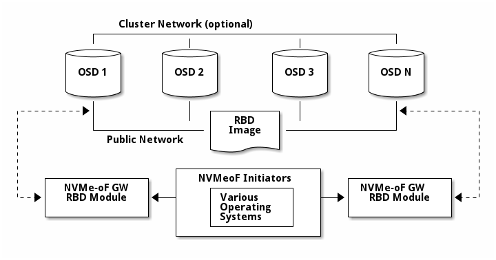

Notice
This document is for a development version of Ceph.
Ceph NVMe-oF Gateway
Storage administrators can install and configure an NVMe over Fabrics (NVMe-oF) gateways for a Storage Ceph cluster. With Ceph NVMe-oF gateways, you can effectively run a fully integrated block storage infrastructure with all features and benefits of a conventional Storage Area Network (SAN).
The NVMe-oF gateway integrates Storage Ceph with the NVMe over TCP (NVMe/TCP) protocol to provide an NVMe/TCP target that exports RADOS Block Device (RBD) images. The NVMe/TCP protocol allows clients, which are known as initiators, to send NVMe-oF commands to storage devices, which are known as targets, over an Internet Protocol network. Initiators can be Linux clients, VMWare clients, or both. For VMWare clients, the NVMe/TCP volumes are shown as VMFS Datastore and for Linux clients, the NVMe/TCP volumes are shown as block devices.

High Availability with NVMe-oF gateway group
High Availability (HA) provides I/O and control path redundancies for the host initiators. High Availability is also sometimes referred to as failover and failback support. The redundancy that HA creates is critical to protect against one or more gateway failures. With HA, the host can continue the I/O with only the possibility of performance latency until the failed gateways are back and functioning correctly.
NVMe-oF gateways are virtually grouped into gateway groups and the HA domain sits within the gateway group. An NVMe-oF gateway group currently supports eight gateways. Each NVMe-oF gateway in the gateway group can be used as a path to any of the subsystems or namespaces that are defined in that gateway group. HA is effective with two or more gateways in a gateway group.
High Availability is enabled by default. To use High Availability, a minimum of two gateways and listeners must be defined for the subsystems on every GW.
It is important to create redundancy between the host and the gateways. To create a fully redundant network connectivity, be sure that the host has two Ethernet ports that are connected to the gateways over a network with redundancy (for example, two network switches).
The HA feature uses the Active/Standby approach for each namespace. Using Active/Standby means that at any point in time, only one of the NVMe-oF gateways in the group serve I/O from the host to a specific namespace. To properly use all NVMe-oF gateways, each namespace is assigned to a different load-balancing group. The number of load-balancing groups is equal to the number of NVMe-oF gateways in the gateway group.
In case the one or more GWs in the group dies or cannot be seen by the Ceph NVMe-oF monitor, an automatic failover is triggered, and another GW in the group will assume reponsibilty to the load-balancing group of the failed GW(s). That means that there is no disruption to the IO, because another GW will continue serving these namespaces. If the failing GW(s) are showing up again, a failback is automatically triggered.
The NVMe-oF initoator on the host, will also continue trying to connect a failing GW, for the amount of time that was specified in the connect-all command. The recommended amount is 1800 seconds.
Scaling-out with NVMe-oF gateway
The NVMe-oF gateway supports scale-out. NVMe-oF gateway scale-out supports: Up to four NVMe-oF gateway groups. Up to eight NVMe-oF gateways in a gateway group. Up to 128 NVMe-oF subsystems within a gateway group. Up to 32 hosts per NVMe-oF subsystem. 1024 namespaces per gateway group.
NVMe-oF gateway Discovery
Ceph NVMe-oF gateways support Discovery. Each NVMe-oF gateway that runs in the Ceph cluster also runs a Discovery Controller. The Discovery Controller reports all of the Subsystems in the GW group.
Brought to you by the Ceph Foundation
The Ceph Documentation is a community resource funded and hosted by the non-profit Ceph Foundation. If you would like to support this and our other efforts, please consider joining now.